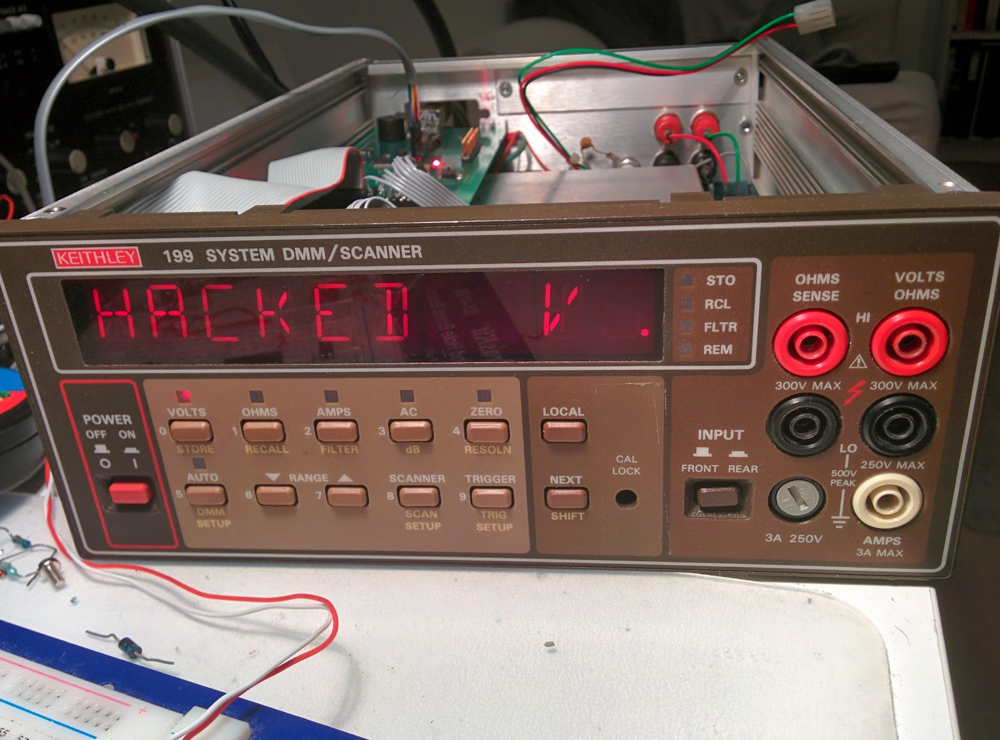
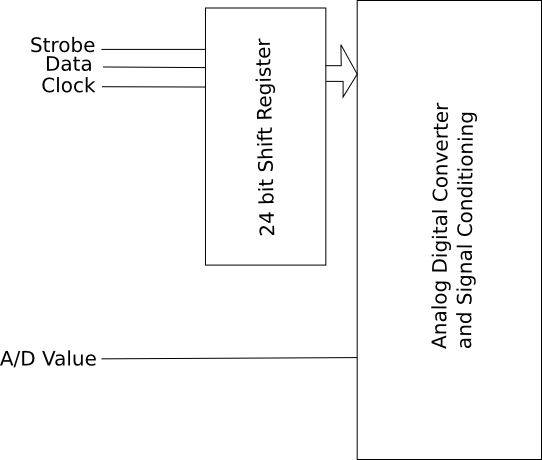
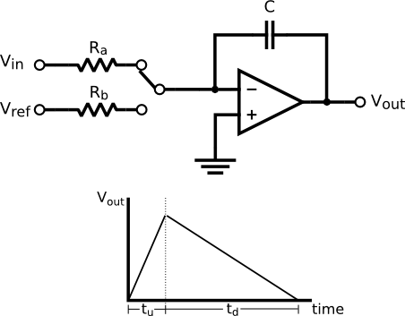
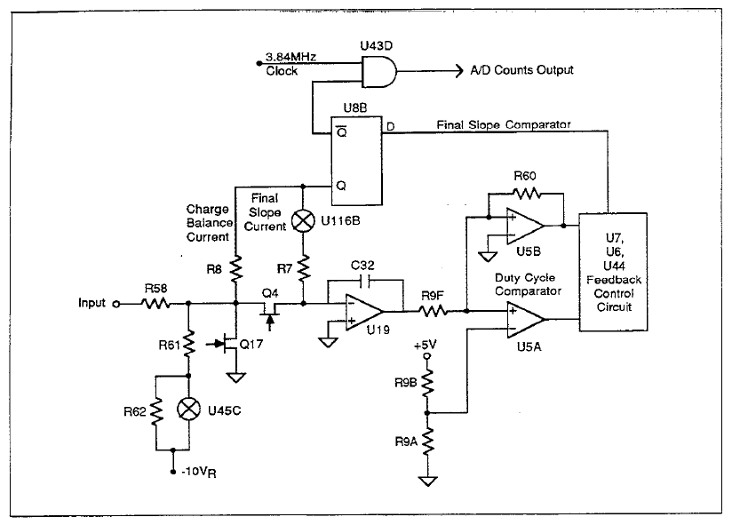

Recently I bought an old Keithley 199 on e-bay. It didn't work, but it was cheap and I thought it would be easy to fix, and in the worst case I would have at least a source of electronic components for future projects.
After the multimeter arrived, I turned it on and notice that nothing was shown in the display, so I started troubleshooting by downloading the Keithley 199 Mainteinance Guide and studying the schematics.
The electronics is distributed into three boards, one with the user interface (display, keyboard) other which contains the analog digital converter and signal conditioning circuitry and the last one which contains the digital logic.
I started measuring the power rail on the digital board. It should have 5V but I measured 0V. On this multimeter, the 5V for the digital board are provided by a 7805 regulator. I thought it could be the source of the failure, so I replaced it. But the error persisted. I dismounted the digital board and measured the resistance between +5V and Ground. It was less than 1Ohm, which indicates a shortcut somewhere.
Looking for the shortcut on the obvious places, circuit board traces and solder pads, I found nothing. My next suspect where the capacitors. I checked them all they where ok. The IC's where next, some of them where mounted on sockets, and where easy to check, but some others where soldered and needed painfully work.
I started desoldering the via. Via is an acronym of Versatile Interface Adapter and is an interface chip for the microprocessor (this multimeter was build when microprocessors where just computing units and relied on external chips to manage interface, floating point, etc). After taking it out of the circuit, I checked it and found it was defective. I know, I could buy a new via (they are discontinued, I think, but some are still available from re-sellers on e-bay), but I thought it will be more interesting to replace the old digital board with a new design.
The interface between digital and analog boards couldn't be more simple. In order to reduce the number of control lines, the Keithley 199 uses a serial interface, just a shift register. Three control lines go from digital to analog board and one goes back into the digital world. The firs three are serial data which are clocked into shift registers in the analog board, which in turn, control the different switches for range selection, ohms measurements, and analog digital conversion. The line which goes back provides the digital value of the analog signal, the output of the analog digital converter. A simplified diagram is shown in the following figure:
 Figure 1: Keithley 199 Analog Board simplified diagram
Well, this in theory. Now it is time to go into the finer details. One thing, which I personally find fascinating, is that the analog digital converter is actually implemented with discrete parts, and actually controlled from the processor. Nowadays there is frequently a custom ASIC or an FPGA who does the control of the integrating analog digital converter. In this multimeter, the micro-controller sends a sequence of serial data to the shift register, which in turns controls the analog digital conversion. As we will see in the following paragraphs, the timing in which this sequence are transmitted are critical for accurate A/D conversions.
Let start talking about the analog digital converter, which is from the charge-balancing variety. In order to explain how it works, may be is easier to start with a close cousin, the double ramp integrating analog to digital converter (figure2).
 Figure 2: Enhanced run-up dual slope integrating ADC (source: Wikipedia) The double ramp integrating converter, as it name hints, works integrating the unknown voltage for a fixed amount of time, and then discharging the integration capacitor connecting a reference voltage of opposite polarity and measuring the time the output of the integrator takes to reach zero. This process is shown graphically on figure 2. It shows a basic integrator circuit where the voltage output ramps up as function of the unknown voltage(Vin) and time. The relationship between unknown voltage and time is given by following formula:
$$V_{out-up} = -\frac{V_{in}}{R_aC}t_{u} + V_{initial}$$
In the ramp down part, an know reference voltage, of reverse polarity as the input signal, is connected to the input. The output voltaje ramps down until it reach zero. The output voltage during this ramp down period is given by following formula:
$$ V_{out-down} = - \frac{V_{ref}}{R_bC}t_d + V_{out-up}$$
Relating equations 1 and 2, we can calculate the input voltage as function of the time passed between start of the ramp up period and end of the ramp down period:
Easy, isn't it. At least in theory. But as always the devil is in the details. We will talk about this in a moment.
The double ramp converter is easy to implement, and as we can see in formula x, it is almost independent of the actual phisical components. And I say almost, because even thought the values of the components are left out of the equation, this equation assumes ideal integrator behavior in first place. And, oh surprise, it is not!.
The first problem is related to the limited supply voltage. The integrator is, of course, an electronic circuit, and it needs to get its supply voltage from somewhere. If we let connected the unknown voltage at the input of the integrator (see figure x), the output voltage will ramp-up but only until the output voltage reaches nearly the supply voltage, a situation know as saturation.
The second problem comes from the integrating capacitor. I know, it comes a little bit of a surprise, because there is no capacitor in the equation for the output voltage (eq. y), but remember from which equations it comes from:
1 y 2
Did you see?. When you equal these two equations in order to get the output voltage, you make the assumption that the capacitor in the interval one is the same that is on interval two, and it is not always the case. Due to a phenomenon know as “Dielectric absorption”, the capacitor will change its behavior with time.
 Figure 3: Keithley 199 A/D Converter schematic
Here comes the charge balancing in the game. Charge balancing works similar as double slope, first an unknown voltage is integrated, but instead of let the output go indefinite up, a circuit compares the output and when it reaches a defined level, and then, a reference voltage is applied in the input which causes the output to ramp down. When the output voltage has ramp down for a little while, we disconnect again the reference voltage, which causes the output to ramp up again, as the unknown voltage is still present in the input. If we track carefully how much time has the output voltage ramped down, we can also calculate the unknown input voltage.